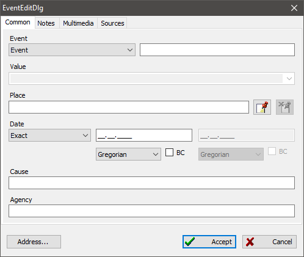

There are two main record types in a genealogical database: events and facts. An event designates a milestone for a person or family life; therefore, an event can be attached to a person or family record only.
An event has a type—it can be a predefined one or you can use the "Fact" type as a generic type and then add a user-defined type name. Also, for an event you can specify a location where it took place, and a date or date range with a calendar for the date(s). Optionally you can add some text notes, reference to sources, and multimedia content. For some events like death it is not unreasonable to specify a reason that caused the event and a certified organization.
The "Value" field is valid only for events of type "Fact". For example, the "Value" field for a "Rank" fact may store the rank a person had while doing his/her military service. For "Award" it may store the kind of the award. GEDKeeper stores all values you have entered as facts' "Values", thus you can quickly access the previous values from the dropdown list.

There is more information about how you should define and process dates in the Dates special features article.
See also: Person, Family, Source, Note, Multimedia, Location, Address.